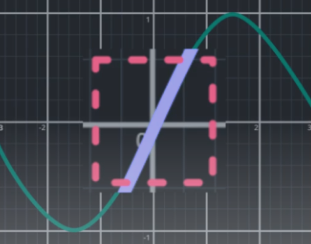
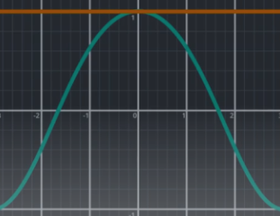

Linearisation
Topics
Steps in linearisation
Pick the operating point
Choose some state of the non-linear system to linearise around.
Since
Linearise sines and cosines
Consider the consequences of an angle $\phi$ being close to zero.

Linearise products of variables
An example would be the multiplication of an input and a state. The key insight is that product of a very small number times a very small number, is a tiny number whose value is so small that it can be safely ignored; which leads to cancellation of terms.Example

The solution is the tangent line at the operating point. The slope of the parabola at the operating point can be found using calculus and will match that of the tangent line. Zooming into the operating point, visually, the tangent and the parabola are very close to each other. This confirms the tangent is a good linear approximation of the parabola in the region.
The linear equation that gives a good approximation of $f(x) = x^2$ when $x$ is close to 1 ends up being: $$\begin{align*} f_{lin}(x) &= 2x -1 \\ &= 1 + 2(x-1) \end{align*}$$ Break down of the solution equation:- $x-1$ This is $\Delta{x}$. It tells how far $x$ is from the operating point. When $x=0 \rightarrow -1$, when $x=1 \rightarrow 0$.
- $1$ It's the value of the original function at the operating point of $x = 1$.
- $2$ It is the slope/derivative of the original function at the operating point.